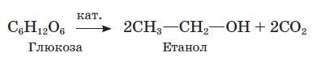

До основних промислових методів одержання спиртів належать: гідратація алкенів, гідрування карбонільних сполук, оксосинтез і ферментативна переробка вуглеводів (бродіння) та окиснення. Крім того, існують лабораторні методи одержання: гідроліз галогеналкілів і синтез за допомогою металоорганічних сполук.
Метанол (метиловий спирт) уперше був добутий Р. Бойлем у 1661 р., а вивчений лише в першій половині ХІХ ст. Найдавнішим методом добування метанолу є суха перегонка деревини (звідси походить його інша назва деревний спирт).
Нині метанол добувають із синтез-газу (суміш СО і Н2). За температури 250 °С і тиску 5 МПа та наявності каталізатора (CuO, ZnO) ці гази взаємодіють між собою:
CO + 2 H2 → CH3−OH
Метанол широко використовують в органічному синтезі, а також як розчинник. Великі кількості його переробляють на формальдегід що є сировиною для виробництва пластмас. Метиловий спирт використовують для добування формальдегіду, потрібного для виробництва пластмас та фенолформальдегідних смол і деяких етерів. У майбутньому все більше й більше зростатиме значення метилового спирту для добування найрізноманітніших речовин, потрібних народному господарству. За розмаїттям своїх застосувань він перевершить етиловий спирт, і його роль можна буде порівняти з тією, котру сьогодні відіграють в органічному синтезі насичені вуглеводні.
Метанол – отрута. Уживання навіть невеликої кількості цієї сполуки спричиняє сліпоту, а доза понад 25 мл – навіть смерть.
Метанол дуже подібний до етанолу за смаком і запахом, розрізнити ці сполуки можна лише в хімічній лабораторії. Трапляються випадки отруєння метанолом, коли його помилково приймають за етанол.
Етанол (синоніми – етиловий спирт, винний спирт, алкоголь) відомий переважно як основа алкогольних напоїв, про які людство знає з найдавніших часів.
Перша літературна згадка про етиловий спирт як «горючу воду», добуту перегонкою вина, датована VIII ст., а елементний склад етанолу з'ясував швейцарський учений Т. Соссюр у 1814 р.
Отже, найдавніший метод добування етанолу – це спиртове бродіння глюкози, що міститься у винограді, інших фруктах. Процес відбувається під упливом природних каталізаторів ензимів (ферментів), що виробляються деякими видами дріжджів. У загальному вигляді процес спиртового бродіння можна подати рівнянням:

Насправді утворюється суміш спиртів та інших речовин, у якій усього 12% етанолу. Для його виділення використовують метод дистиляції, або перегонки (перегонні куби зображені на малюнку). У результаті утворюється так званий ректифікат,що містить 96% етанолу та 4% води.
Етанол добувають також гідратацією етену. Добутий у такий спосіб спирт використовують для технічних потреб.
Використання етанолу надзвичайно широке. Це розчинник для виготовлення фармацевтичних препаратів (настоянок, екстрактів тощо), парфумерних і косметичних виробів, есенцій, лаків (політура для меблів). Етанолом як бактерицидним засобом обробляють рани. У харчовій промисловості з нього виготовляють алкогольні напої.
Із етанолу в промислових масштабах виробляють оцтову кислоту, хлороформ, медичний ефір та ін. У багатьох країнах суміш бензину з етанолом (до 10%) використовують як пальне.
Етанол, призначений для технічних цілей, відомий під назвою денатурат. Цей продукт містить домішки, що змінюють запах, смак і колір етанолу, – це робить його непридатним для споживання.
Дія етанолу на організм.
Сучаcні перегонні куби для добування етанолу
За своїми фармакологічними властивостями етанол належить до наркотичних засобів. Уживаний у вигляді алкогольних напоїв у малих дозах він послаблює гальмівні процеси в корі головного мозку, а в разі збільшення дози – знижує й рівень збуджувальних процесів, з'являється сонливість, свідомість затьмарюється і, нарешті, людина непритомніє.
Із етанолом пов'язана одна з найстрашніших хвороб – алкоголізм. Унаслідок систематичного вживання алкоголю в людини виникає спершу психічна, а потім і фізична залежність. Вона полягає в тому, що спершу такі ознаки алкогольного отруєння, як головний біль, серцебиття, тремтіння рук швидко минають від прийняття дози алкоголю. Цим самим створюється замкнене коло, що не розірвати та яке призводить до незворотних змін у органах, до психічних порушень, а в результаті – деградації особистості.
Слід пам'ятати, що причиною переважної кількості нещасних випадків, дорожньо-транспортних пригод, побутових травм є вживання алкоголю.
Особливо небезпечний алкоголь для молодого організму. Навіть невеликі дози впливають на швидкість реакцій, здатність зосереджуватися, виконувати розумову роботу. Спожитий у великих дозах, він діє як отрута на всі системи людського організму. Специфічна зміна настрою одразу після вживання алкоголю, пожвавлення є дуже оманливими, оскільки згодом настає фаза пригнічення центральної нервової системи, фізичної й психічної загальмованості.
У молодих людей захворювання на алкоголізм розвивається швидше, оскільки в них інтенсивніше відбуваються процеси обміну.